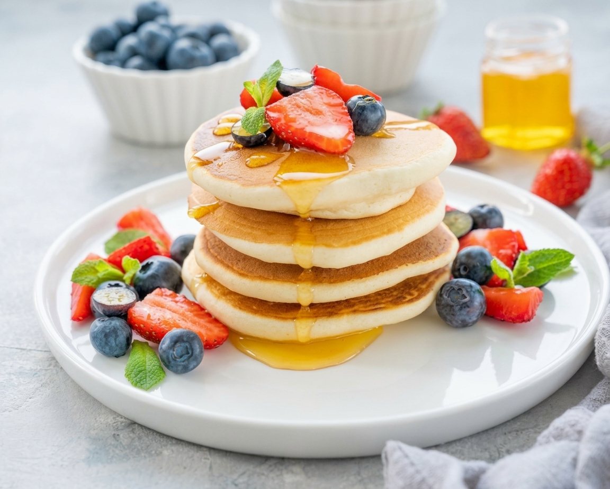

פנקייקים ביתיים
פנקייקים רכים, אווריריים וזהובים, שמכינים בקלות ובמהירות. מושלמים לארוחת בוקר מפנקת או לקינוח טעים.

⏰ זמן הכנה: 25 דקות
🥞 כמות: 10–12 פנקייקים
⭐ רמת קושי: קל
מצרכים
- 1 וחצי כוסות קמח
- 2 כפות סוכר
- 2 כפיות אבקת אפייה
- קורט מלח
- 1 ביצה
- 1 ורבע כוסות חלב
- 2 כפות שמן
- 1 כפית תמצית וניל
- מעט חמאה או שמן לשימון המחבת
להגשה:
- סירופ מייפל
- פירות טריים חתוכים
- אבקת סוכר (לא חובה)
אופן ההכנה
- בקערה גדולה מערבבים קמח, סוכר, אבקת אפייה ומלח.
- בקערה נפרדת טורפים ביצה, חלב, שמן ותמצית וניל.
- יוצקים את התערובת הרטובה אל תוך החומרים היבשים.
- מערבבים בעדינות עד לקבלת בלילה אחידה. אין צורך לערבב יותר מדי.
- מחממים מחבת על אש בינונית ומשמנים אותה במעט חמאה או שמן.
- יוצקים למחבת מעט מהבלילה וממתינים עד שמופיעות בועות קטנות.
- הופכים את הפנקייק בזהירות ומטגנים את הצד השני עד להזהבה.
- ממשיכים כך עם שאר הבלילה.
- עורמים את הפנקייקים בצלחת ומגישים עם מייפל ופירות טריים.